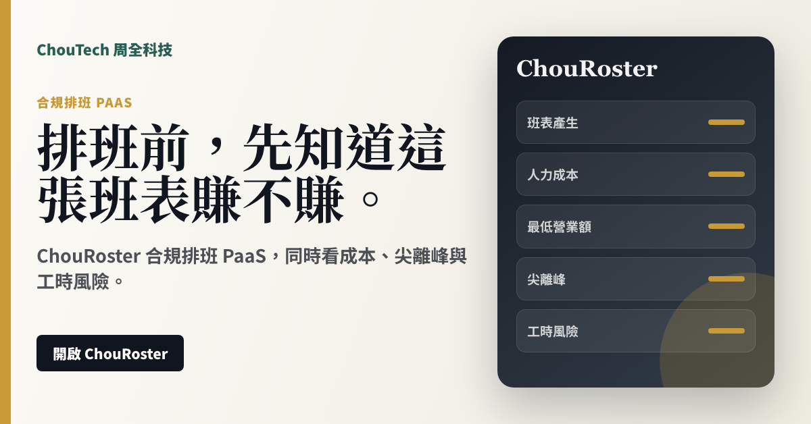

建立週班表、員工時薪與班別資料。
合規排班 PaaS
排班前看成本，排班後抓風險
ChouRoster 是 ChouReg 底下的合規排班 PaaS，給餐飲、零售、門市與輪班制企業使用。第一版主打班表產生、人力成本試算、最低營業額提醒、尖離峰分析與勞基法風險提示。
目前是可操作原型；薪資結算、完整假別與正式法規引擎仍在開發中，不能宣稱正式 payroll。
Sales Positioning
可銷售方向：門市排班訂閱、餐飲零售人力成本工具、ChouReg 合規模組加購。
班表產生、人力成本、最低營業額、尖離峰配置與勞基法風險提示。
客戶現在的痛點
- 店長排班只看人夠不夠，沒先看成本
- 尖離峰人力配置憑經驗，事後才發現浪費
- 工時、例休、休息日風險沒有留下紀錄
買了之後得到什麼
- 排班前先估人力成本與營收底線
- 標示工時和排班風險
- 把排班檢查結果回寫 ChouReg 合規流程
Product Page
產品頁介紹。
估算人力成本與最低營業額底線。
提示工時、休息、例假、休息日與假別需確認項目。
PaaS Offer
用 PaaS 的方式賣：開通、訂閱、建立工作區。
主軸是產品自助使用；需要客製合作時，也以平台合作、模組或 API 工作區表達。
單店排班與成本試算。
多門市班表、角色與營運指標集中管理。
作為 ChouReg 勞動合規模組的排班子產品。
Image Ad
可直接拿去推銷的圖片廣告。
ChouRoster 合規排班 PaaS，同時看成本、尖離峰與工時風險。
